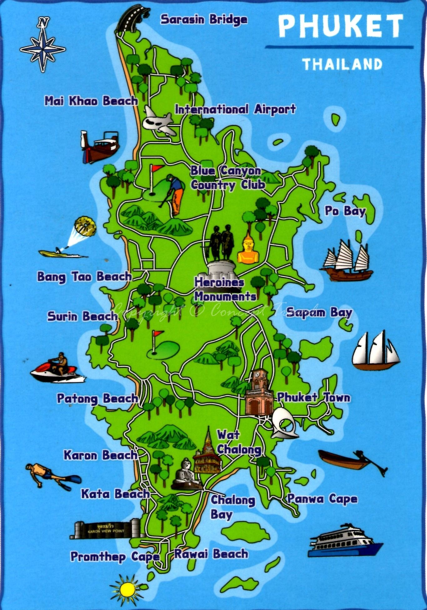

ที่ตั้งและอาณาเขต

ภูเก็ตเป็นจังหวัดทางภาคใต้ ด้านตะวันตกติดชายฝั่งทะเลอันดามัน มหาสมุทรอินเดีย ตั้งอยู่ระหว่างเส้นรุ้งที่ 7 องศา 45 ลิปดา ถึง 8 องศา 15 ลิปดาเหนือ เส้นแวงที่ 98 องศา 15 ลิปดา ถึง 98 องศา 40 ลิปดา ตะวันออกประกอบด้วยเกาะภูเก็ตซึ่งเป็นเกาะที่ใหญ่ที่สุดในประเทศไทย เกาะบริวารอีก 12 เกาะ รวมเนื้อที่ประมาณ 570 ตารางกิโลเมตร ส่วนกว้างที่สุดของเกาะภูเก็ตเท่ากับ 21.3 กิโลเมตร ส่วนยาวที่สุดของเกาะภูเก็ตเท่ากับ 48.7 กิโลเมตร มีอาณาเขตดังนี้
ทิศเหนือ จรดช่องปากพระ จังหวัดพังงา เชื่อมโดยสะพานสารสินและสะพานท้าวเทพกระษัตร์
ทิศใต้ จรดทะเลอันดามัน
ทิศตะวันออก จรดทะเลเขตจังหวัดพังงา
ทิศตะวันตก จรดทะเลอันดามัน
ภูมิประเทศ พื้นที่จังหวัดภูเก็ตประมาณร้อยละ70 เป็นภูเขาสลับซับซ้อนทอดจากแนวทิศเหนือถึงทิศใต้ส่วนใหญ่อยู่ทางด้านตะวันตก ของเกาะมียอดเขาที่สูงที่สุดประมาณ 529 เมตร คือยอดเขา “ไม้เท้าสิบสอง” อยู่ในเขตตำบลฉลอง อำเภอเมือง และอีกประมาณร้อยละ 30 เป็นพื้นที่ราบอยู่ตอนกลางและตะวันออกของเกาะ ส่วนพื้นที่ฝั่งตะวันตกเป็นภูเขาและหาดทราย นอกจากนี้ยังมีลำคลองเล็กๆ อาทิ คลองบางใหญ่ คลองท่าจีน คลองท่าเรือ คลองบางโรง เป็นต้น
ภูมิอากาศ จังหวัดภูเก็ตมีลักษณะภูมิอากาศแบบเขตศูนย์สูตรอยู่ในเขตอิทธิพลลมมรสุม อากาศจึงอบอุ่นและชุ่มชื้นตลอดปี มีเพียง 2 ฤดู คือ ฤดูฝน ได้รับอิทธิพลจากลมมรสุมตะวันตกเฉียงใต้ เริ่มตั้งแต่เดือนพฤษภาคม ถึง พฤศจิกายน และฤดูร้อนได้รับอิทธิพลจากลมมรสุมตะวันออกเฉียงเหนือ เริ่มตั้งแต่เดือนธันวาคม ถึง เมษายน เดือนมีนาคมเป็นเดือนที่มีอุณหภูมิเฉลี่ยสูงสุดคือ 33.4 องศาเซลเซียส เดือนมกราคมเป็นเดือนที่มีอุณหภูมิเฉลี่ยต่ำสุดคือ 22 องศาเซลเซียส